|
理论
|
在量子力学中，光子与分子之间的散射过程被描述为分子被激发到一个能量低于真实电子态的虚态，然后（几乎立即）退激发。
虚态的寿命极短，可通过海森堡不确定关系计算：
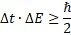
典型的激发光子能量为1–2 eV时，激发态的寿命仅约10–15 s。在此极短的时间后，分子要么回到振动基态，要么回到激发态（图1）。当初态和终态相同时，该过程称为瑞利散射。
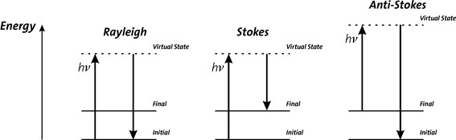
图1：拉曼散射的能级图
如果初态是基态而终态是更高的振动能级，则称为斯托克斯散射；如果初态能量高于终态，则称为反斯托克斯散射。
入射光子和拉曼散射光子之间的能量差等于散射分子的一个振动量子的能量。散射光强度对能量差的图称为拉曼光谱。
当光子与分子相互作用时，电场
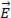
在分子中诱导偶极矩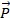
：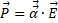
比例常数
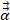
是分子的极化率张量，是分子周围电子云可被扭曲的容易程度的度量。对于各向同性分子， α 简化为标量。电磁场的时间依赖性为
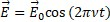
若取一个振动双原子分子作为模型系统，假设简谐运动，其核间距可写为
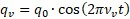
极化率a是核间距的函数。对于各向同性分子，α 可展开为泰勒级数
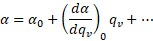
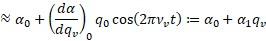
其中对于小原子位移忽略了高于线性的项。
现在观察外部电场中的分子，可得
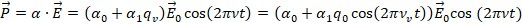
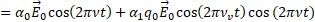
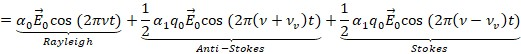
可以看到，除了弹性散射的瑞利线之外，光谱中还出现了相对于激发光偏移 ±νv 的额外谱线。
拉曼线的位置通常以波数（1/cm）表示，即相对于激发线的能量偏移：
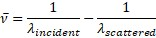
λ入射 和 λ散射 分别是入射光子和拉曼散射光子的波长（以cm为单位）。
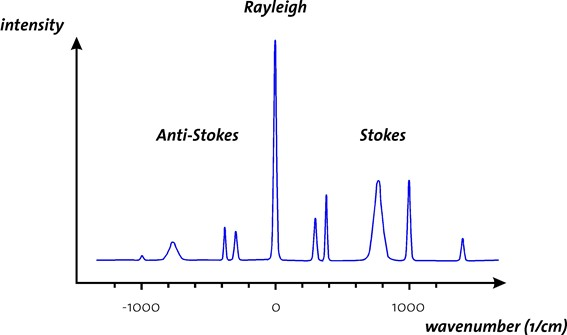
图2：典型拉曼光谱
如图2所示，典型的拉曼光谱相对于瑞利线是对称的，反斯托克斯线小于斯托克斯偏移线。
根据经典散射理论，散射光强度 I 与激发频率 ν 的四次方成正比。
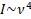
因此，用400 nm蓝光激发样品将产生比用800 nm红光高16倍的拉曼信号。
使用蓝色（或紫外）激发光的问题是荧光。大多数样品在用蓝光激发时显示荧光。与荧光相比，拉曼效应极其微弱。如果样品显示荧光，由于强烈的荧光背景，获得拉曼光谱通常非常困难。在光谱的红色（甚至红外）部分，荧光通常不再是问题，但激发强度必须更高（I∼ν4！）。另一个问题是，硅探测器不能用于1100 nm以上（Si的带隙能量：1.12 eV）。其他红外探测器（如InGaAs）极其昂贵，热噪声远大于硅，且迄今为止没有具有合理暗计数率的光子计数探测器。在实际实验中，必须在检测效率和激发功率之间找到折衷。
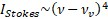
，且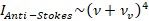
因此 I反斯托克斯>I斯托克斯。实验发现恰恰相反： I反斯托克斯<I斯托克斯。
在这里，量子力学发挥作用了。对于反斯托克斯散射，分子必须已处于激发振动态。
玻尔兹曼分布定义了在 N 个分子中有多少部分被热激发到能级 Ej
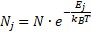
利用谐振子的能量，可得
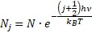
分子处于基态的概率远高于处于激发态的概率。在室温下，斯托克斯散射因此比反斯托克斯散射有效得多。为计算相对强度，必须考虑指数函数
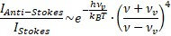
通常，e函数将主导此项，因此
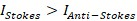
如果测量斯托克斯和反斯托克斯线之间的强度比，可以确定样品温度。